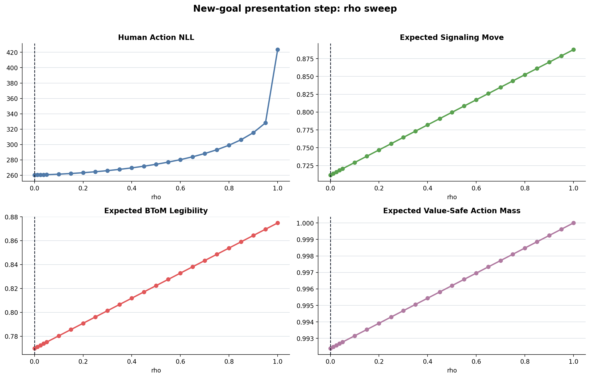
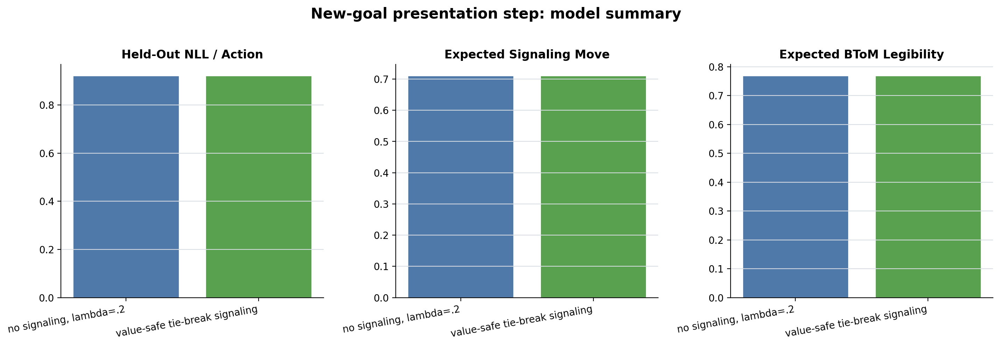
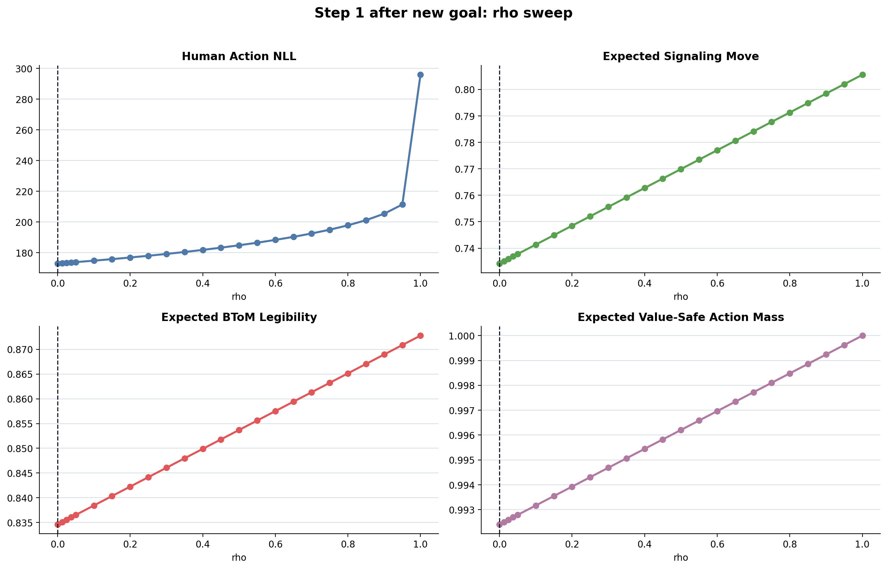
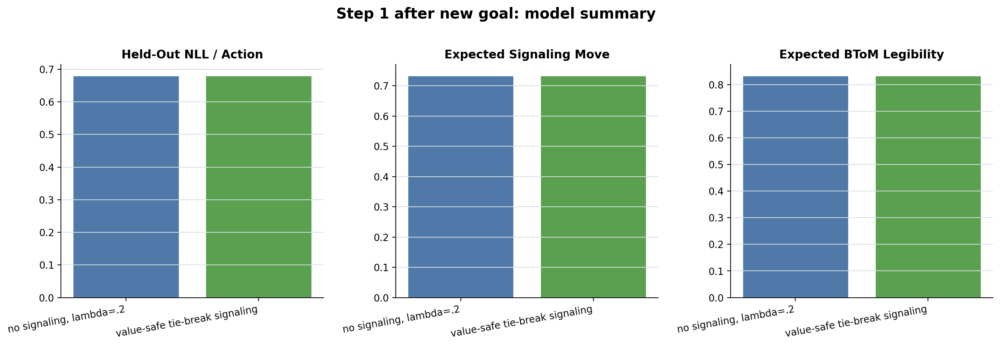
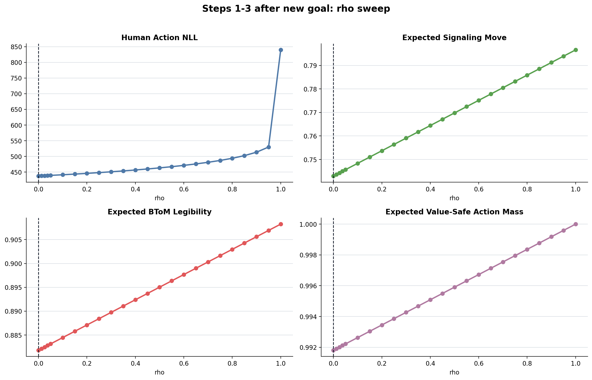

Model
For each sampled goal, signaling can only reweight actions in the value-safe set. The free parameter rho mixes the unshaped JointRL base policy with a legibility-maximizing tie-break policy.
pi(a|g) = (1-rho) pi_base(a|g) + rho pi_tiebreak(a|g)
A_safe(g) = actions whose soft Q is within epsilon=0 of the best action
New-goal presentation step
Actions=282. Fixed lambda=0.2; value epsilon=0; legibility beta=5. Only rho is fitted. Goal weights are unchanged for every rho.


| model | rho | lambda | n_params | actions | in_sample_nll | heldout_nll | heldout_nll_per_action | delta_heldout_nll | expected_signal_move | expected_btom_legibility | expected_value_safe_mass | aic | bic |
|---|---|---|---|---|---|---|---|---|---|---|---|---|---|
| no signaling, lambda=.2 | 0.00 | 0.20 | 0 | 282 | 260.273 | 260.273 | 0.923 | 0.000 | 0.71 | 0.77 | 0.99 | 520.55 | 520.55 |
| value-safe tie-break signaling | 0.00 | 0.20 | 1 | 282 | 260.273 | 260.273 | 0.923 | 0.000 | 0.71 | 0.77 | 0.99 | 522.55 | 526.19 |
Step 1 after new goal
Actions=254. Fixed lambda=0.2; value epsilon=0; legibility beta=5. Only rho is fitted. Goal weights are unchanged for every rho.


| model | rho | lambda | n_params | actions | in_sample_nll | heldout_nll | heldout_nll_per_action | delta_heldout_nll | expected_signal_move | expected_btom_legibility | expected_value_safe_mass | aic | bic |
|---|---|---|---|---|---|---|---|---|---|---|---|---|---|
| no signaling, lambda=.2 | 0.00 | 0.20 | 0 | 254 | 172.995 | 172.995 | 0.681 | 0.000 | 0.73 | 0.83 | 0.99 | 345.99 | 345.99 |
| value-safe tie-break signaling | 0.00 | 0.20 | 1 | 254 | 172.995 | 172.995 | 0.681 | 0.000 | 0.73 | 0.83 | 0.99 | 347.99 | 351.53 |
Steps 1-3 after new goal
Actions=688. Fixed lambda=0.2; value epsilon=0; legibility beta=5. Only rho is fitted. Goal weights are unchanged for every rho.

| model | rho | lambda | n_params | actions | in_sample_nll | heldout_nll | heldout_nll_per_action | delta_heldout_nll | expected_signal_move | expected_btom_legibility | expected_value_safe_mass | aic | bic |
|---|---|---|---|---|---|---|---|---|---|---|---|---|---|
| no signaling, lambda=.2 | 0.00 | 0.20 | 0 | 688 | 437.438 | 437.438 | 0.636 | 0.000 | 0.74 | 0.88 | 0.99 | 874.88 | 874.88 |
| value-safe tie-break signaling | 0.00 | 0.20 | 1 | 688 | 437.438 | 437.438 | 0.636 | 0.000 | 0.74 | 0.88 | 0.99 | 876.88 | 881.41 |